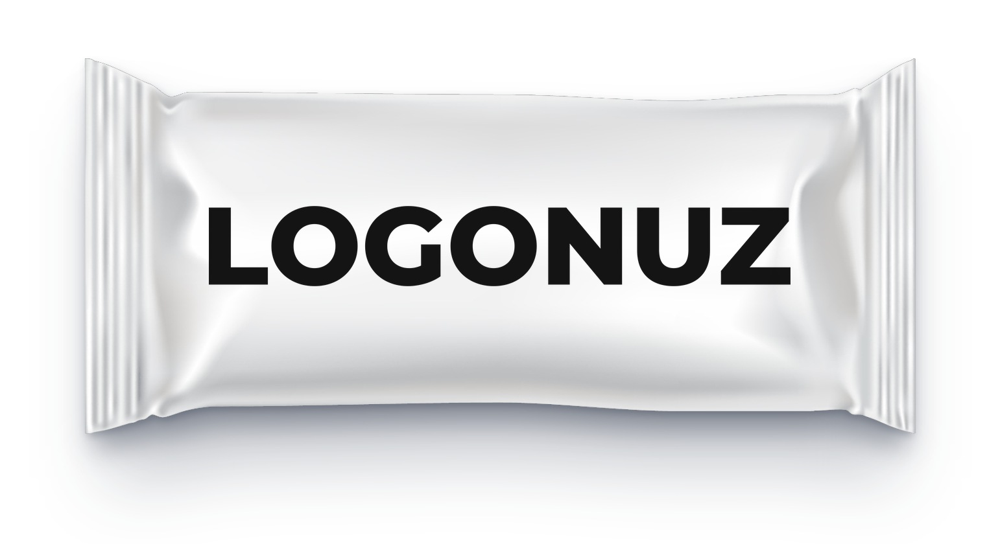
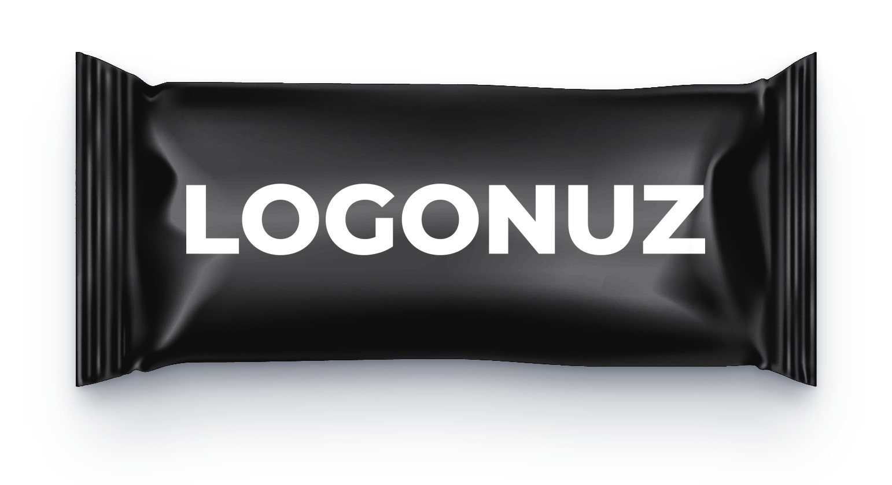
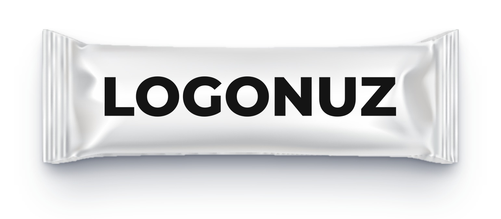
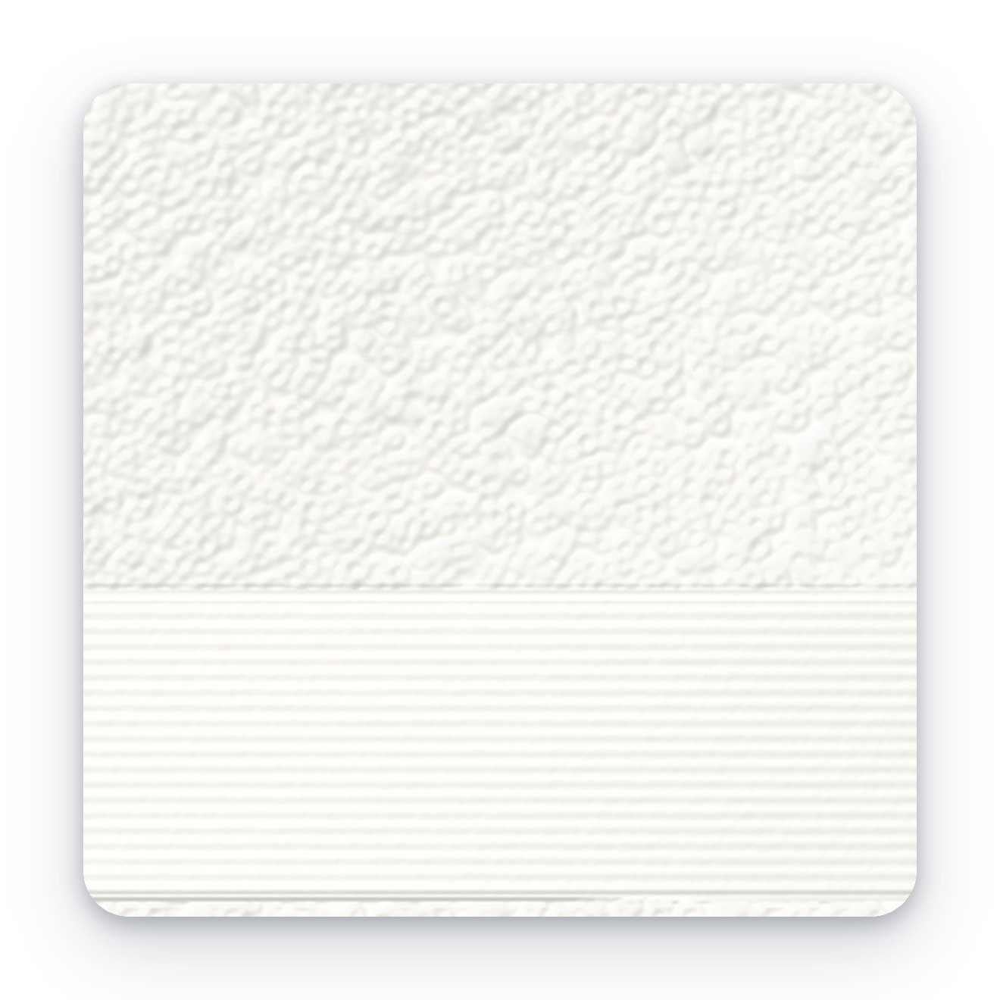
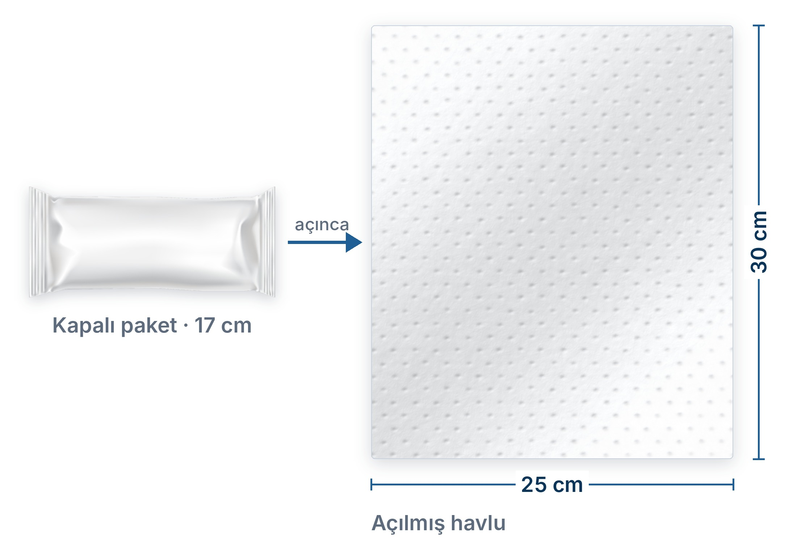
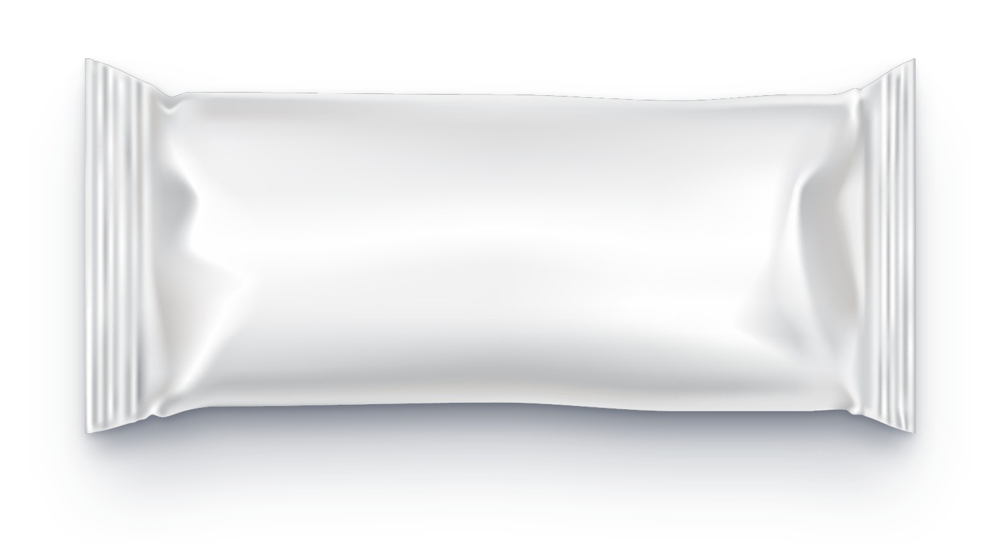
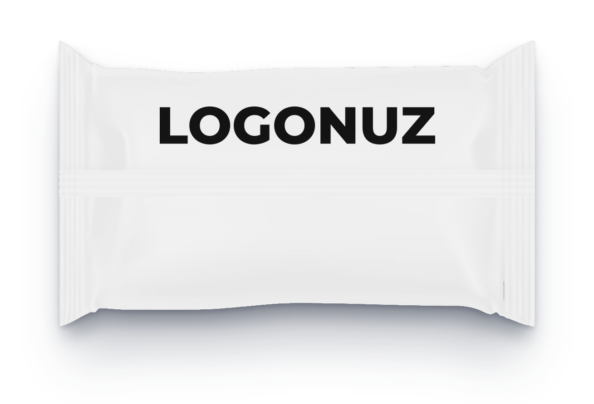

İşletmenizin markası, müşterinizin her temasında.
Logolu rulo ve katlı ıslak havlu, ıslak mendil ve Oshibori. Restoran, otel, kafe ve hizmet işletmelerine özel üretim.




Kurumsal Ürün Kataloğuhijyenlab.com


Restoranda masaya bırakılan havlu, otelde misafire verilen mendil, kuaförde kullanılan havlu… Bunlar müşterinizin işletmenize fiziksel olarak dokunduğu anlardır. HijyenLab bu ürünleri işletmenizin logosu, renkleri ve kurumsal kimliğiyle hazırlar ve düzenli olarak tedarik eder.
Böylece her tek kullanımlık ürün, hem hijyen ihtiyacını karşılar hem de markanızı müşterinizin eline, cebine, evine taşır.
Tek tek paketlenmiş, tek kullanımlık ıslak havlu ve mendillerle müşterinize temiz bir deneyim sunun.
Logonuz, renkleriniz ve iletişim bilgilerinizle ambalaj tasarımı. Logonuz yoksa işletme adınızla tasarlıyoruz.
Toplu üretim, düzenli sipariş. Aynı tasarımla tekrar siparişte klişe bedeli ödemezsiniz.
Bütün ürünler beyaz veya renkli zeminle, logolu ya da baskısız olarak hazırlanabilir. Ölçüler iç kumaş ölçüsüdür; 30×30 ve 30×35 rulo, 25×30 ile aynı ambalajda gelir.
| Ürün | Kod | Koli içi | En az sipariş beyaz / renkli zemin | Öne çıktığı yerler |
|---|---|---|---|---|
| 25×30 cm rulo ıslak havlu | BM12 | 400 | 5.200 / 10.000 | Restoran, kafe, otel, kuaför, güzellik merkezi |
| 25×25 cm rulo ıslak havlu | BM15 | 500 | 5.000 / 10.000 | Lokanta, fast food, paket servis |
| 30×30 cm rulo ıslak havlu | BM11 | 400 | 5.200 / 10.000 | Otel, spa, premium işletmeler |
| 30×35 cm rulo ıslak havlu | BM13 | 400 | 5.200 / 10.000 | Otel, spa ve wellness, güzellik merkezi |
| 20×25 cm katlı ıslak havlu | BM545 | 625 | 5.000 / 10.000 | Restoran, otel, catering, kuaför |
| 7×12 cm ıslak mendil | BM21 | 1.000 | 10.000 | Kebapçı, balıkçı, fast food, pastane, otel, etkinlik |
| Oshibori ıslak havlu %100 pamuk havlu | OSHIBORI | 250 | 3.000 | Fine dining, uzak doğu mutfağı, otel, beach club |
Tek ürün yerine ihtiyacınızı birlikte karşılayalım: masaya 25×30 rulo ıslak havlu, servis için 20×25 katlı ıslak havlu, hesapla birlikte 7×12 ıslak mendil. Hepsi aynı tasarım diliyle, markanızın renklerinde.
Fiyatlar adet, zemin rengi ve baskı rengi sayısına göre değiştiği için size özel teklif hazırlanır.


Dört rulo ölçüsünde ve 20×25 katlı ıslak havluda aynı kumaş kullanılır: noktalı dokulu nonwoven. Ürünler yalnız ölçüde ve katlanma biçiminde ayrılır.
Açılmış ölçü, ürün adındaki ölçüdür: 25×30 cm rulo havlu açıldığında 25×30 cm'dir.
Görsel: kumaş dokusunun çizimidir.
Düzenli ve kurumsal servis sunumu isteyen işletmeler için katlanmış form.
Tek tek paketli, cepte taşınan, markanızı müşterinizin evine götüren ürün.
Farklı bir koku isterseniz 20.000 adet ve üzeri siparişlerde değerlendiriyoruz.

Yemek öncesi veya sonrası misafire sunulan, rulo halinde sarılı ıslak havlu. Gerçek havlu dokusuyla premium bir sunum: fine dining, uzak doğu mutfağı, otel ve beach club'lar için.
Görsel: pamuk havlu dokusunun çizimidir.
Kağıt peçete değil: kumaş gibi yumuşak, tek tek paketli ıslak havlu. Paket ve açılmış havlu aynı ölçekte gösterilmiştir.



%100 pamuk havlu, 22,5×24,5 cm, adet başına 15 g. Rulo halinde sarılı, gerçek havlu dokusu.
| Kağıt peçete | Nonwoven ıslak havlu rulo, katlı, mendil | Oshibori %100 pamuk | |
|---|---|---|---|
| Dokunuş | Kağıt | Kumaş gibi yumuşak | Gerçek havlu |
| Kullanırken | Islanınca dağılır | Yırtılmaz, dağılmaz, tüy bırakmaz | Gerçek havlu dokusu |
| Islaklık | Kuru | Islak ve kokulu; sıkınca su damlamaz | Islak |
| Sunum | Açıkta durur | Tek tek paketli | Tek tek paketli |
| Marka | Genellikle yok | Ambalajda logonuz | Ambalajda logonuz |
İlgilendiğiniz ürünlerden numune gönderelim; kumaşı dokunarak inceleyin, işletmenizde deneyin.

Logonuzu mail veya WhatsApp ile iletin; ürününüzün logonuzla nasıl görüneceğini gösteren görseli ücretsiz hazırlayıp size gönderelim.
Görsel fikir vermek içindir; üretim, grafik onayınızdan sonra başlar.
Arka yüzde logonuz kapama bandının üst yarısına basılır. Ön ve arka yüzde aynı renkler kullanılırsa klişe sayısı artmaz.

Yemek sonrası el temizliği için masada ve müşterinin cebinde logonuz.
7×12 ıslak mendil25×30 ruloRestoranda, odada ve havuz başında misafirin gördüğü kurumsal ürün.
20×25 katlı30×30 / 30×35 ruloOshiboriHer paketin içinde markalı ıslak mendil; yüksek adet, düzenli tüketim.
7×12 ıslak mendil25×25 ruloServis havlusu ve mendil, markanızın müşteri deneyiminin parçası olur.
25×25 rulo7×12 ıslak mendilHer müşteride kullanılan, salonunuzun adını taşıyan tek kullanımlık havlu.
25×30 rulo20×25 katlıYüksek adetli, etkinliğe veya kuruma özel tasarımlı mendil ve havlu.
7×12 ıslak mendil20×25 katlıBirden fazla şubeniz varsa bütün şubelere aynı tasarımla düzenli tedarik planlıyoruz. Otel ve restoran malzemesi toptancıları ile reklam ajanslarıyla da çalışıyoruz.
Logonuzu ve ilgilendiğiniz ürünü bize iletin; ambalaj görselinizi ve size özel teklifinizi hazırlayalım.